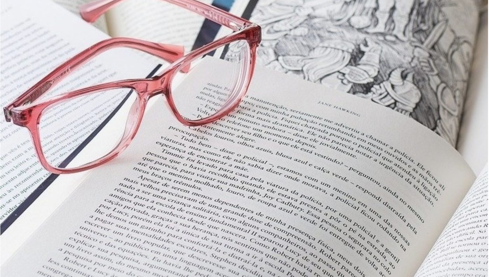

Redacción científica y APA 7.ª edición
Te guiamos paso a paso en el diseño y redacción de tu tesis o trabajo de suficiencia profesional, observando el método científico y las normas de citado y referenciación APA 7.
Tu.investigación
Desde la elección del tema hasta la sustentación exitosa.
Pide informes
Te guiamos paso a paso en el diseño y redacción de tu tesis o trabajo de suficiencia profesional, observando el método científico y las normas de citado y referenciación APA 7.
Programa estructurado por módulos con seguimiento continuo, diseñado para identificar tus avances y pendientes en cada etapa de tu investigación.
Con más de 5 años de experiencia como docente universitario de Metodología de la Investigación y Tesis, la instructora ha asesorado con éxito más de 40 proyectos académicos, incluyendo tesis y trabajos de suficiencia profesional.
Informes: tu.investigacion01@gmail.com